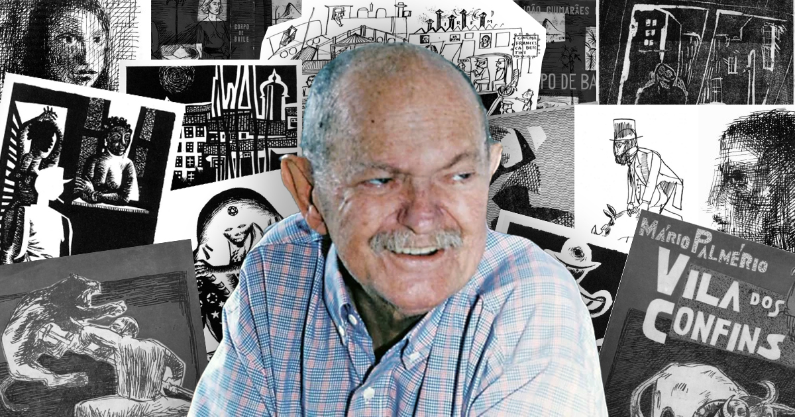
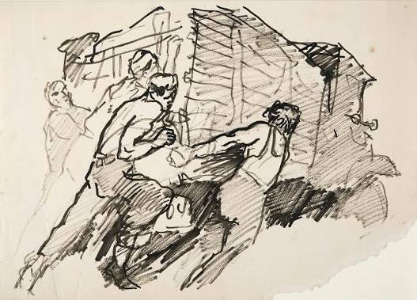
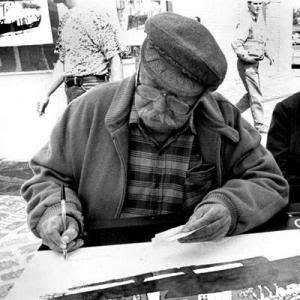

Quem foi Poty Lazzarotto?
Napoleon Potyguara Lazzarotto, conhecido como Poty Lazzarotto, foi um importante artista plástico, ilustrador, desenhista e muralista paranaense. Ele nasceu em Curitiba, em 29 de março de 1924, e ficou conhecido principalmente por suas gravuras, murais e obras que retratam aspectos da história e da cultura do Paraná.

A história de Poty Lazzarotto
Poty nasceu em Curitiba e desde jovem demonstrou interesse pelo desenho e pelas artes. Durante sua carreira, estudou e trabalhou em diferentes lugares do Brasil e também no exterior. Ao retornar ao Paraná, passou a produzir obras relacionadas à história, às pessoas e às paisagens do estado.
Poty ficou especialmente conhecido pelos grandes murais que realizou em espaços públicos. Suas obras apresentam cenas históricas, personagens e acontecimentos importantes, ajudando a preservar a memória cultural do Paraná por meio da arte.

A importância artística e cultural de Poty Lazzarotto
Poty Lazzarotto possui grande importância para a arte e para a cultura paranaense porque transformou acontecimentos históricos e elementos do cotidiano em obras de arte. Seus desenhos, gravuras e murais ajudam a contar a história do Paraná de uma maneira visual e acessível.
Muitas de suas obras podem ser encontradas em espaços públicos de Curitiba e de outras cidades. Seus trabalhos fazem parte da identidade visual e cultural do Paraná e continuam sendo conhecidos por estudantes, moradores e visitantes.
